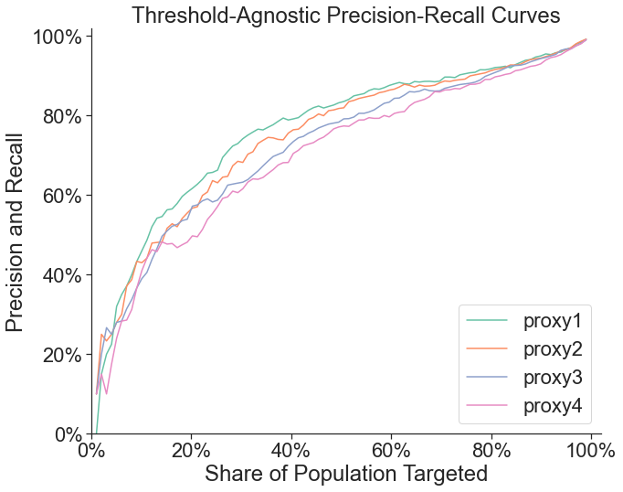
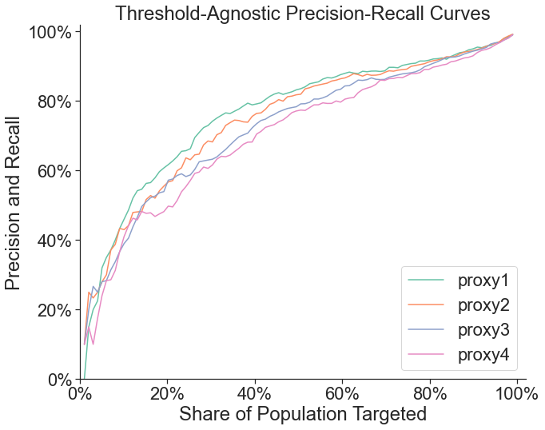

Targeting Evaluations¶
import sys
sys.path.insert(0,'../..')
from targeting import *
Set up the configuration file and load some targeting simulation data.
targeting = Targeting('../../configs/config_emily.yml')
Create a table that compares targeting methods to a ground truth poverty measure. Three threshold-agnostic targeting metrics will be calculated: Pearson correlation (between ground truth and proxies), Spearman correlation, and a threshold-agnostic Area Under the Reciever Operating Characteristic Curve Score (AUC). Additionally, provide percentile targeting thresholds for ground truth and proxy to obtain four threshold-specific targeting metrics: accuracy, precision, recall, and threshold-specific AUC. As with all calculations in this module, the table can be calculated with or without sample weights.
targeting.targeting_table('consumption', ['proxy1', 'proxy2', 'proxy3', 'proxy4'], 50, 20)
| Targeting Method | Pearson | Spearman | AUC (Threshold-Agnostic) | Accuracy | Precision | Recall | AUC (Threshold-Specific) | |
|---|---|---|---|---|---|---|---|---|
| 0 | proxy1 | 0.853370 | 0.856880 | 0.882319 | 0.700 | 1.000 | 0.400 | 0.925204 |
| 1 | proxy2 | 0.816323 | 0.818275 | 0.869501 | 0.698 | 0.995 | 0.398 | 0.921336 |
| 2 | proxy3 | 0.775243 | 0.772671 | 0.846071 | 0.688 | 0.970 | 0.388 | 0.886284 |
| 3 | proxy4 | 0.731196 | 0.724984 | 0.817799 | 0.680 | 0.950 | 0.380 | 0.866024 |
Draw threshold-agnostic receiver operatoring characteristic (ROC) curves and precision-recall curves. Threshold-agnostic ROC curves are drawn by taking a grid matched targeting thresholds (that is, targeting K% of the population according to a proxy and the same K% of the population according to the ground-truth, for a krid of K between 0 and 100), and calculating the false positive rate and true positive rate of the targeting method for each point in the grid. Threshold-agnostic precision-reccall curves are calculated in the same way, so precision and recall are balanced by construction.
targeting.roc_curves('consumption', ['proxy1', 'proxy2', 'proxy3', 'proxy4'], p=None, weighted=False)
targeting.precision_recall_curves('consumption', ['proxy1', 'proxy2', 'proxy3', 'proxy4'], p=None, weighted=False)
 

Draw threshold-specific ROC curves and precision-recall curves. Threshold-specific ROC curves are calculated by holding the share of the population targeted according to the ground-truth measure constant, and varying the share of the population targeted on the proxy measure to obtain false positive and true positive rate trade-offs.
targeting.roc_curves('consumption', ['proxy1', 'proxy2', 'proxy3', 'proxy4'], p=50, weighted=False)
targeting.precision_recall_curves('consumption', ['proxy1', 'proxy2', 'proxy3', 'proxy4'], p=50, weighted=False)
Provide a budget (provided as the level of benefits assigned to each individual UBI program, in the same units as the ground truth poverty measure) to draw social welfare curves for a set of targeting methods. Individual welfare is assumed to be a convex function of pre-program poverty and benefits assigned. Generate a table with the share of population targeted and corresponding transfer size that optimizes social welfare for each proxy poverty measure that could be used for targeting.
targeting.utility_curves('consumption', ['proxy1', 'proxy2', 'proxy3', 'proxy4'], .01, weighted=False)
targeting.utility_table('consumption', ['proxy1', 'proxy2', 'proxy3', 'proxy4'], .01, weighted=False)
| Proxy | Optimal Share of Population Targeted | Maximum Utility | Optimal Transfer Size | |
|---|---|---|---|---|
| 0 | proxy1 | 26.255102 | -1225.954439 | 0.038168 |
| 1 | proxy2 | 9.081633 | -817.080667 | 0.111111 |
| 2 | proxy3 | 38.377551 | -1606.065329 | 0.026110 |
| 3 | proxy4 | 35.346939 | -1582.812099 | 0.028329 |